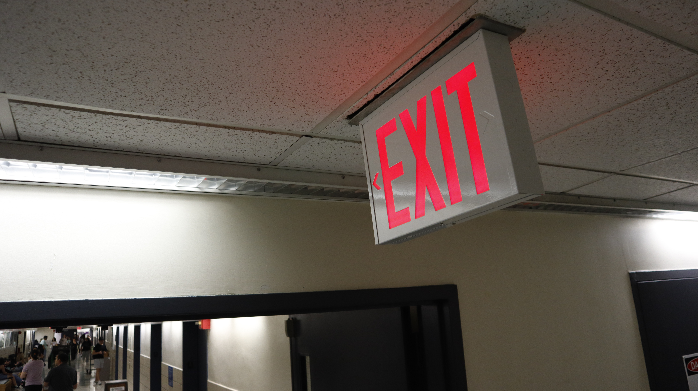
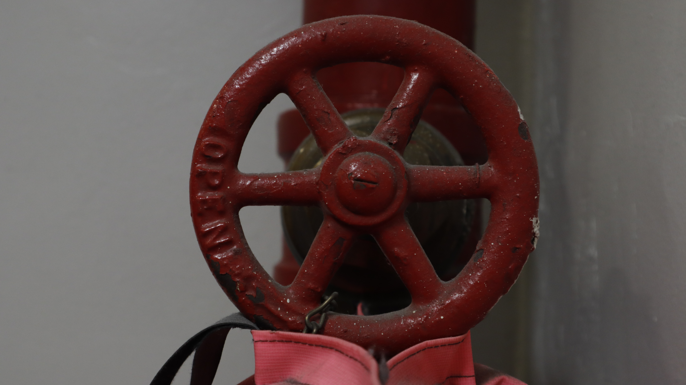
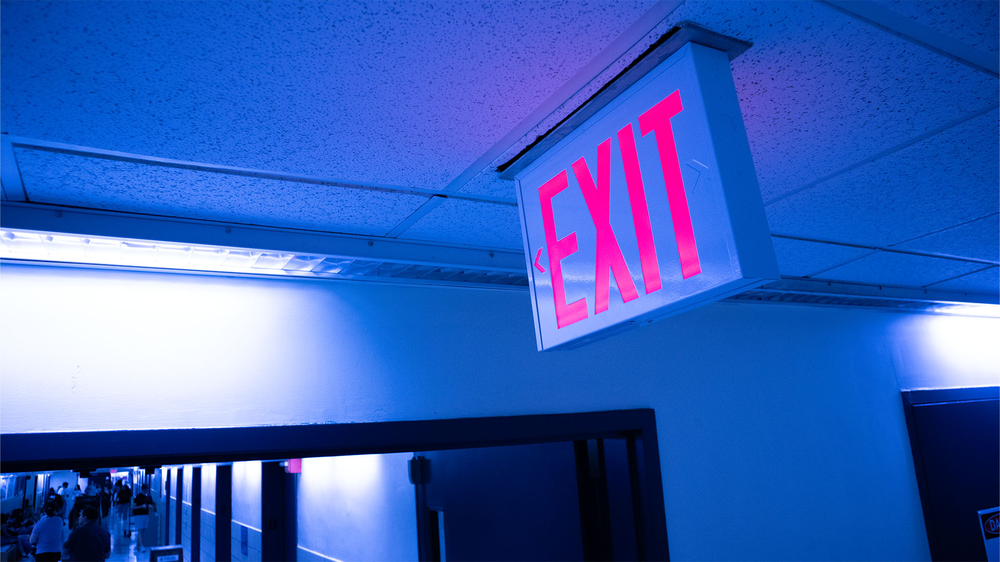

Based on the composition and framing concepts that were covered in the lecture, take at least five photos with lab DSLR cameras and chose two to edit.
Choose the two images that you think are compositionally the most compelling and save a copy of both images in their original pixel dimensions (in other words, keep a back-up of the original file). Crop a copy of one of the images to 1920 px by 1080 px and crop a copy of the other image to 5”x7”. Now, modify the Tonal Range of the two images using an adjustment layer following the steps in chapters above. Export these as jpg images and make sure they are under 2 MB in their file size.
HOME